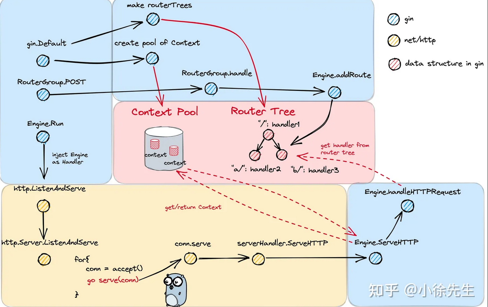

gin 介绍
Gin is a web framework written in Go. It features a martini-like API with performance that is up to 40 times faster thanks to httprouter. If you need performance and good productivity, you will love Gin.
The key features of Gin are:
- Zero allocation router
- Fast
- Middleware support
- Crash-free
- JSON validation
- Routes grouping
- Error management
- Rendering built-in
- Extendable
Gin 与 net/http 的关系
gin是在 Golang HTTP 标准库 net/http 基础之上的再封装
Gin 框架使用示例
func main(){
mux := gin.Default()
mux.Use(middleware)
mux.Post("/ping",xxxhandler)
if err :=mux.Run(":8000"); err != nil {
panic(err)
}
}
func xxxhandler(c *gin.context){
c.Json(http.StatusOK,"pong")
}
简易解释（后面会详细解释）：
-
gin.Default()返回默认的gin Engine
-
Use()函数，添加中间件
-
mux.Post()创建一个post"/ping"的路由，路由到xxxhandler方法
-
.Run()运行http服务
用net/http
func main() { http.HandleFunc("/ping", func(w http.ResponseWriter, r *http.Request) { if r.Method == http.MethodPost { w.Header().Set("Content-Type", "application/json") w.WriteHeader(http.StatusOK) w.Write([]byte(`{"message": "pong"}`)) } else { http.Error(w, "Method Not Allowed", http.StatusMethodNotAllowed) } }) if err := http.ListenAndServe(":8000", nil); err != nil { panic(err) } }
gin
基础概念
- 路由
- 中间件
- 请求和响应对象
- 参数解析
- 静态文件处理
创建第一个Gin应用
- 创建一个简单的Hello World应用
- 定义路由
- 处理HTTP请求
- 返回JSON响应
路由与控制器
- 路由的定义与使用
- 参数传递和路由参数
- 控制器的创建与使用
中间件
- 什么是中间件
- 内置中间件（Logger、Recovery）
- 自定义中间件
请求与响应处理
- 获取请求数据（GET、POST、Query参数）
- 发送响应数据（JSON、HTML、文件）
- 错误处理与状态码
数据库集成
- 连接数据库
- ORM（如果使用）
- CRUD操作
身份验证与授权
- 用户认证
- 基于角色的授权
- JSON Web Tokens (JWT)的使用
性能优化
- Golang和Gin的性能特点
- 常见性能问题与优化策略
部署与维护
- 部署Gin应用
- 日志管理
- 安全性考虑
最佳实践
- 代码结构组织
- 测试方法
- 文档编写
进阶主题
- WebSocket支持
- 服务器推送（Server-Sent Events）
- 使用第三方库